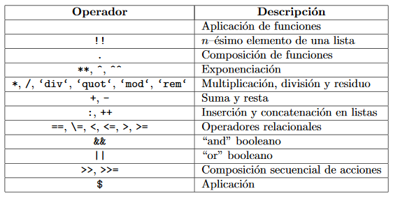

Tarea 6
HASKELL
SÍMBOLOS
SINTAXIS
Se creará una función simple que te regañará de forma diferente en función de tu IMC (índice de masa corporal). Tu IMC es igual a tu altura dividida por tu peso al cuadrado. Si tu IMC es menor que 18,5 tienes infrapeso. Si estas en algún lugar entre 18,5 y 25 eres del montón. Si tienes entre 25 y 30 tienes sobrepeso y si tienes más de 30 eres obeso. Así que aquí tienes la función (no estamos calculando nada ahora, simplemente obtiene un IMC y te regaña)
bmiTell :: (RealFloat a) => a -> String
bmiTell bmi
| bmi <= 18.5 = "Tienes infrapeso ¿Eres emo?"
| bmi <= 25.0 = "Supuestamente eres normal... Espero que seas feo."
| bmi <= 30.0 = "¡Estás gordo! Pierde algo de peso gordito."
| otherwise = "¡Enhorabuena, eres una ballena!"
Las guardas se indican con barras verticales que siguen al nombre de la función y sus parámetros. Normalmente tienen una sangría y están alineadas. Una guarda es básicamente una expresión booleana. Si se evalúa a True, entonces el cuerpo de la función correspondiente es utilizado. Si se evalúa a False, se comprueba la siguiente guarda y así sucesivamente. Si llamamos a esta función con 24.3, primero comprobará si es menor o igual que 18.5. Como no lo es, seguirá a la siguiente guarda. Se comprueba la segunda guarda y como 24,3 es menor que 25, se devuelve la segunda cadena.
Muchas veces la última guarda es otherwise. otherwise está definido simplemente como otherwise = True y acepta todo. Es muy similar al ajuste de patrones, solo se aceptan si la entrada satisface un patrón, pero las guardas comprueban condiciones booleanas. Si todas las guardas de una función se evalúan a False (y no hemos dado otra guarda otherwise), la evaluación falla y continuará hacia el siguiente patrón. Por esta razón los patrones y las guardas encajan tan bien juntas. Si no existe ningún patrón ni ninguna guarda aceptable se lanzará un error.
ESQUELETO DE LOS PROGRAMAS
La estructura de un programa de Haskell es sorprendentemente simple. Tienes una función principal que hace IO, y eso es todo. Así que lo básico:
module Main where
addition a b = a + b
main :: IO ()
main = do let z = addition 5 3
putStrLn $ "The result is: " ++ show z
Ahora puedes compilar esto en un programa simple usando algo como:
ghc --make Main.hs -o program
y debe producir un ejecutable llamado programa.
Un “grupo de funciones” en Haskell se llama “módulo”. Puedes tener múltiples módulos, cada uno en su propio archivo:
module Blarg (exportedFunction) where
helper a b = ... -- this will *not* be exported
exportedFunction a b = helper a b -- this *will* be exported
Solo los identificadores entre paréntesis serán exportados; el resto está oculto. Si no incluye los paréntesis, todo se exportará de forma predeterminada.
APLICACIÓN A DESCARGAR PARA EDITAR Y EJECUTAR
- Atom IDE
- Visual Studio Code
- IntelliJ Plugin for Haskell
- EclipseFP plugin for Eclipse IDE
A QUE TIPO DE PARADIGMA PERTENECE
Paradigma funcional
EJECUCIÓN DE UN PROGRAMA
Si has aprendido otro lenguaje, tu primer programa probablemente haya sido "Hola, mundo!", así que hagamos eso:
Prelude> "Hola, mundo!"
"Hola, mundo!"
El sistema Haskell evaluó la cadena, e imprimió el resultado. También podemos intentar una variante, que imprime directamente a la salida estándar:
Prelude> putStrLn "Hola mundo"
Hola mundo
Usando un compilador Haskell, como GHC, puedes compilar el código para producir un ejecutable. Crea un archivo fuente hola.hs que contenga:
main = putStrLn "Hola, mundo!"
Y compílalo con:
$ ghc -o hola hola.hs
Ahora podrás ejecutar el programa (./hola en sistema Unix, hola.exe en Windows):
$ ./hola
Hola, mundo!